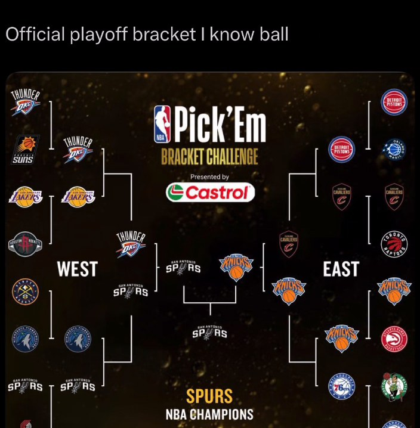

Founder & Creator — @BasseyMuse · Sports Social Media Producer · Video Editor
I built Charles “Basketball” Bassey’s loudest corner of the internet.
From zero.
I founded and run @BasseyMuse — an independent Charles Bassey account I grew from 0 to 6,600+ followers in under 12 months. Strategy, video editing, graphics, publishing and community are all me, solo — including live, in-person game coverage. In April 2026 my playoff bracket post ran to 40M views — and its follow-ups turned one prediction into a two-month story the whole timeline followed.
Kansas City based — available to relocate nationwide; available anytime.
01 The Numbers
All figures from @BasseyMuse on X — profile counters and post metrics as of November 14, 2026. Below the top line: the pinned career-story thread at 46K views, and 23K views on the top post from the Nov 13, 2026 game night covered in person. Followers sit last on purpose: the output above is what built them.
02 The Account · Featured Case
The assignment: give one player a home on the timeline
The bet
@BasseyMuse launched in December 2024 around a single player: Charles Bassey — a rotation big with a real following and no account building around him nightly. One player, covered like a franchise.
What I built
A daily, solo operation: pre-game graphics, live clips and posts during games, a final-stats post at the buzzer, then next-day edits, graphics and memes. Replies and community run every day, not just game days.
What happened
0 → 6,600+ followers in under 12 months and 5,800+ posts. The pinned career-story thread reached 46K views. In the 2026 playoffs, one bracket post ran to 40M views — and I kept posting the next chapter until the Finals. On Nov 13, 2026 the account covered Spurs vs Warriors in person — and the beat writers at the game posted about it.
Game night — the run of show
Gameday graphic and matchup post set the tone.
Clips and posts within minutes of the play — the timeline moves with the game.
Final-stats post the moment the game ends.
Edit, graphic or meme while the game is still the conversation.
The bracket — a two-month story in five posts

One prediction post became a serialized story. Every round, the timeline came back to check the bracket — and I posted the next chapter whether it was winning or losing. The bracket called every series through the conference finals, Finals matchup included. Five posts, 47M+ views.
“Official playoff bracket I know ball.” Spurs as champions. 40M views, 45K likes, 7.5K bookmarks.
“Not a single pick wrong” — 2.5M views. Then “12/12 I know ball” — 642K. Every series, called.
14 of 14 series right, one round from a perfect bracket. 3.9M views, 110K likes.
The Knicks took the Finals. I owned the miss the same night — “the knicks broke the prophecy” — 153K views. The loss was content too.
03 Selected Work
Four pieces. Every job on them was mine.
Concept, edit, design, caption, publish — solo, start to finish. Two edits, two graphics; the full archive lives on the account itself.
Video Edit — The Celebration Edit
Concepted, cut and finished solo — the account’s signature hype edit.
Graphic — The Banner
Designed the account’s visual identity: fresh player cutouts composited on Warriors blue. The nickname runs in the masthead of every profile view.
Video Edit — Yaxel → Bassey: The Assist Tape
Film-room compilation: every play checked by hand so each one is a verified true assist, duplicates removed, cut vertical for the feed.
Meme — Never Gave Up
The account’s voice in one image: the loyalty is the joke and the point. Built Nov 13 — game day — and filed to the account’s albums.
04 Long-Form · YouTube
Full videos. Built from scratch.
I co-own and produce Shot Chuckers, an NBA analysis channel on YouTube. Every video starts from nothing — topic, research, script, voiceover, edit, graphics, publish — and I cut the audio and drive the edit on each one. Fifteen-to-twenty-five-minute essays, built end to end: the long-form proof that the production scales past the feed.
Video Essay — Grading Every 2026 NBA Offseason Trade
The full pipeline at full length: every trade from the 2026 offseason, researched, scripted, voiced and graded.
Video Essay — The Lakers’ Offseason Was a Disaster
An opinion with receipts: the take is the headline, the analysis underneath it is the product.
Video Essay — Where Should LeBron Go Next?
A speculative question built like a reported one — fits, scenarios, and a verdict at the end.
05 Brand Identity
The name that stuck: Charles “Basketball” Bassey
I coined the nickname, built the account’s identity around it, and repeated it on every post, graphic and reply — until fans used it unprompted and working media put it in their own posts. That’s not a bio line; it’s brand-building with receipts.
Built into the identity
The account doesn’t just use the name — it’s organised around it. The bio reads:
“Celebrating The Life Of CBB — Charles ‘Basketball’ Bassey”— @BasseyMuse bio, X
It’s in the banner masthead, the pinned thread, and the caption of every game post.
Adopted by the community
Repetition turned a coinage into the community’s default: “Basketball” shows up unprompted across replies and quote posts — fans arguing matchups, asking for minutes, and celebrating makes in the name the account gave him.
Used by working media
On Nov 13, 2026, Bay Area News Group Warriors writer Joseph Dycus used it in his own post from the game — “San Antonio Spurs fans have love for Charles ‘Basketball’ Bassey” — a post that did 26K views. The same night, Spurs writer Tom Petrini used it in his own words too, and Chronicle beat writer Luca Evans met the account’s owner at halftime.
“Spurs legend Charles ‘Basketball’ Bassey is here!”— Tom Petrini, Spurs writer, his own post from the game
“rarely get starstruck”— Tom Petrini, posting his selfie with the account’s owner that night
Naming → Repetition → Adoption
06 About
One operator. Every job.
@BasseyMuse is a one-person operation. I plan the calendar, cut the video, design the graphics, post live through games, and run the replies after — every piece on the account is mine, start to finish. In under a year that turned into 6,600+ followers, 5,800+ posts, a nickname the press now uses, a playoff bracket that ran to 40M views, and an in-person game night where the writers covering the team were posting about the account.
Tools: Adobe Premiere Pro · Adobe Photoshop · Canva · OBS
07 Work With Me
Let’s make the next story count.
I’m available for full-time, contract and freelance social/video work — team and media social roles, and live game-night coverage. The fastest way to reach me is a DM on the account itself, or by email at raineyjackson06@gmail.com.